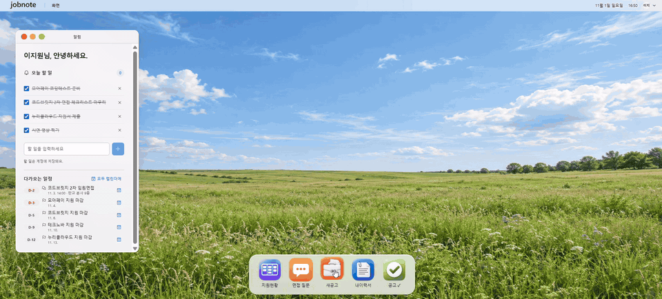
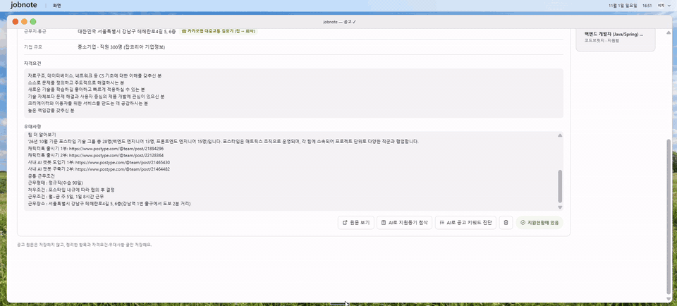
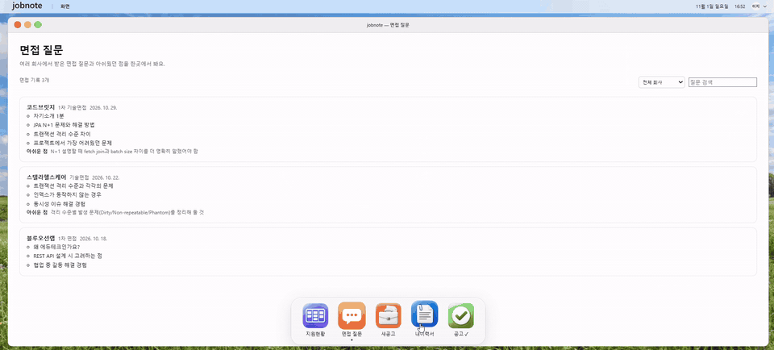
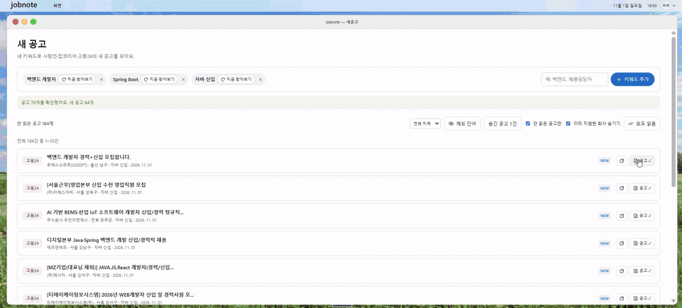
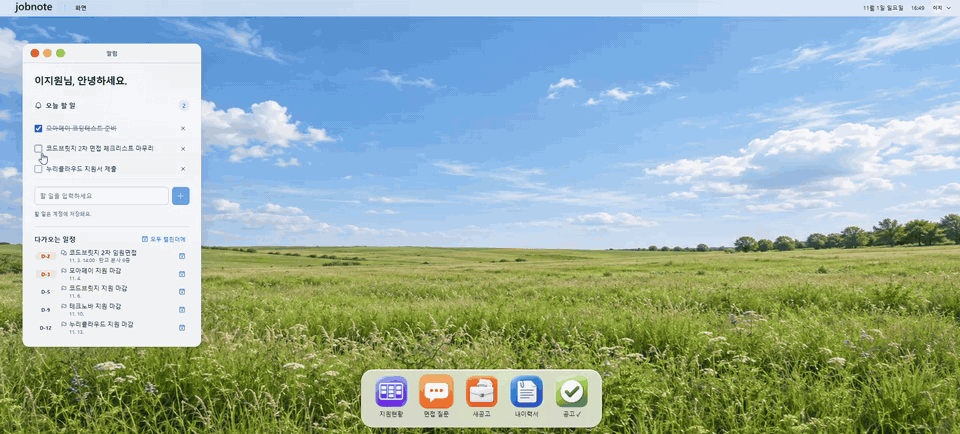
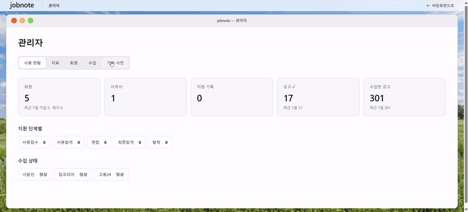
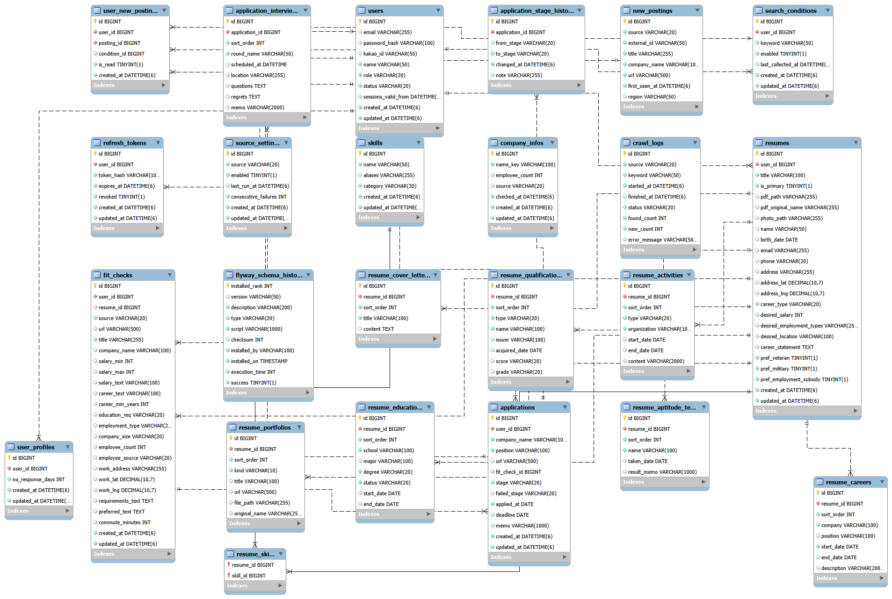

1. 외부 사이트에 의존하는 기능은 “조용한 실패”를 감지해야 한다
채용 사이트 HTML이 바뀌면 파서는 예외 없이 빈 목록을 돌려준다. 이는 “공고가 없음”과 구분되지 않는다. 한 사이트에서 서로 다른 키워드 3개 이상이 모두 0건이면 구조 변경 가능성을 기록하도록 해서, 에러가 나지 않는 실패도 신호로 만드는 법을 배웠다.
PROJECT 03
채용 공고 탐색부터 지원 현황, 이력서, 면접 기록까지 취업 준비 과정을 한곳에서 관리하는 웹 서비스
채용 사이트 HTML이 바뀌면 파서는 예외 없이 빈 목록을 돌려준다. 이는 “공고가 없음”과 구분되지 않는다. 한 사이트에서 서로 다른 키워드 3개 이상이 모두 0건이면 구조 변경 가능성을 기록하도록 해서, 에러가 나지 않는 실패도 신호로 만드는 법을 배웠다.
공고 정리 결과에 직원 수 · 통근 시간까지 기다리면 외부 API 속도에 화면이 묶인다. 공고 내용은 먼저 저장 · 응답하고, 커밋 후 비동기로 보강하는 구조를 적용했다. 또 “기업을 못 찾음”과 “외부 호출 실패”를 구분해야 실패한 조회를 다시 시도할 수 있다는 점도 알게 됐다.
새 백엔드를 옆에 띄우고 상태를 확인한 뒤 교체해도, 오래된 화면이 지연 로딩하는 파일이 사라지거나 DB 마이그레이션이 구버전과 충돌하면 문제가 생긴다. 직전 버전의 화면 파일(assets) 유지와 마이그레이션 호환성 검사를 두면서 배포를 전체 흐름으로 보게 됐다.
수집 잠금과 조회 진행 상태가 서버 메모리에 있어 재시작 · 다중 서버에서는 보장되지 않고, 현재 워크플로는 테스트와 배포가 병렬이다. 지금 구조가 어디까지 보장하는지 정리해 두니 다음에 무엇을 고쳐야 할지가 분명해졌다.
• Service(서비스) 계층 분기 커버리지 80.3% (JaCoCo)
• 80% 미만이면 CI가 실패해 PR이 합쳐지지 않음 (GitHub Actions CI 품질 게이트)
• 73% → 80%: PDF 내보내기 · 공고 링크 읽기의 예외 경우를 테스트로 채움
관심 조건에 맞는 채용 공고를 수집하고 확인합니다.

지원 단계와 면접 일정을 관리하고 준비 내용을 기록합니다.

이력서를 작성하거나 PDF를 가져오고, 완성된 이력서를 내보냅니다.

채용 공고의 주요 조건을 정리하고 근무지까지의 통근 정보를 확인합니다.

취업 준비에 필요한 할 일을 등록하고 진행 상황을 관리합니다.

서비스 이용 현황을 확인하고 회원 · 공고 수집 · 기술 사전을 관리합니다.

Spring Boot는 사람인 · 잡코리아 · 고용24, 카카오 로그인 · 카카오 로컬, ODsay 대중교통, 국민연금 · DART와 연동함. GitHub Actions는 main push 시 배포

| 데이터 | 역할 |
|---|---|
| 사용자 · 검색 조건 · 수집 공고 | 계정별 검색 조건과 수집 결과 연결 |
| 지원 현황 · 면접 · 회사 메모 | 지원 과정과 면접 준비 기록 |
| 이력서 | 작성 · 가져오기 · 내보내기에 사용하는 이력서 데이터 |
| 공고 정리 · 기업 정보 | 공고에서 정리한 항목과 외부 조회 결과 저장 |
| 구분 | 기술 | 사용한 곳 |
|---|---|---|
| Backend | Java 21 · Spring Boot 4.1 · Spring Security · JPA · Validation · Caffeine | REST API, 인증, 캐시 |
| 인증 | JWT (jjwt 0.13, access · refresh) · 카카오 로그인 | 로그인 · 토큰 재발급 |
| Frontend | React 19 · Vite · React Router 6 · Axios · Phosphor Icons | 공고 · 지원 현황 · 이력서 화면 |
| Database | MySQL 8 · Flyway | 서비스 데이터, DB 변경 이력 관리 |
| 문서 · 수집 | Jsoup · PDFBox 3 | 채용 공고 파싱, 이력서 PDF 가져오기 · 내보내기 |
| 테스트 · CI 게이트 | JUnit · Testcontainers (MySQL) · JaCoCo (Service 계층 분기 커버리지 80.3% CI 게이트) · Vitest | 파서 · 공고 정리 · 인증 · 이력서 테스트, 80% 미만 시 PR merge 차단 |
| Infra | Docker Compose · Nginx · GitHub Actions | 컨테이너 실행, 무중단 교체 배포 |
| 외부 연동 | 카카오 로컬 · ODsay · 국민연금 · DART | 주소 좌표, 대중교통 통근 시간, 기업 직원 수 |
문제: 채용 사이트 HTML 구조가 바뀌면 파서가 공고를 찾지 못함. 예외 없이 빈 목록을 반환하면 실제로 공고가 없는 상황과 구분하기 어려움
원인: 사이트별 HTML 구조를 기준으로 제목 · 회사 · 링크를 추출하므로 외부 사이트의 화면 변경에 영향을 받음
해결
SearchParserTest)를 보관결과: 조용히 비어 보이던 상황을 관리자가 확인할 수 있게 됨. 0건 감지는 확정 판정이 아니라 “확인 필요” 신호
문제: 공고를 읽은 뒤 외부 API로 기업 · 통근 정보를 모두 받아야 결과를 보여주면, 외부 응답 속도에 화면이 묶임
원인: 직원 수는 국민연금 · DART, 통근 시간은 주소 좌표와 대중교통 경로처럼 별도의 외부 조회가 필요함
해결
결과: 외부 정보가 늦어도 공고의 기본 내용은 먼저 확인 가능
문제: 서버를 교체하는 동안 기존 요청이 끊기거나, 구버전과 신버전이 같은 DB를 잠시 함께 사용할 수 있음
해결
check-migrations.sh) 추가결과와 한계: 일반적인 백엔드 교체 시 중단을 줄임. 다만 MySQL 설정 변경으로 DB 컨테이너를 다시 만들 때는 중단이 생길 수 있고, 테스트와 배포가 병렬이라 테스트 성공 후 배포가 보장되지는 않음 → 다음 단계
문제: 채용 공고 수집 파싱 및 다중 지원 상태 변경 등 복잡한 비즈니스 로직에서 예외 분기 누락 시 운영 환경 데이터 정합성 오류 위험
원인: 단순 라인 커버리지만으로는 조건문과 예외 처리의 모든 분기(Branch)를 온전히 검증하기 어려움
해결
결과: 예외 분기 누락으로 인한 잠재 결함 사전 차단 및 코드 품질 기준선 확립